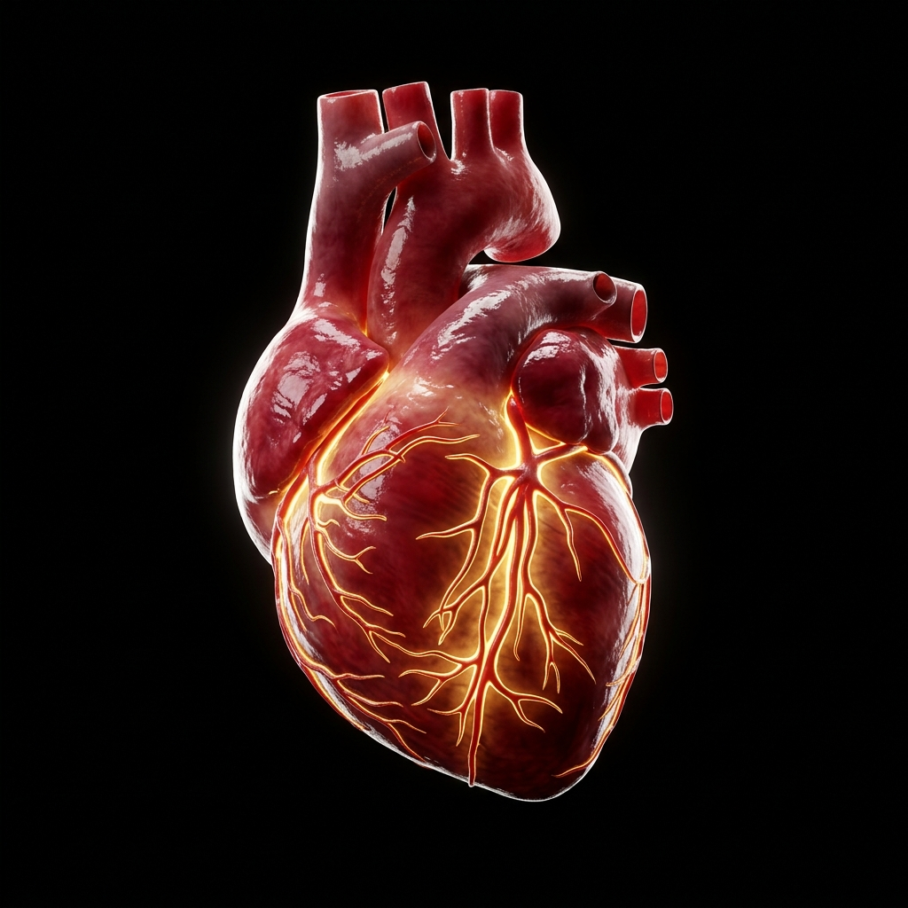
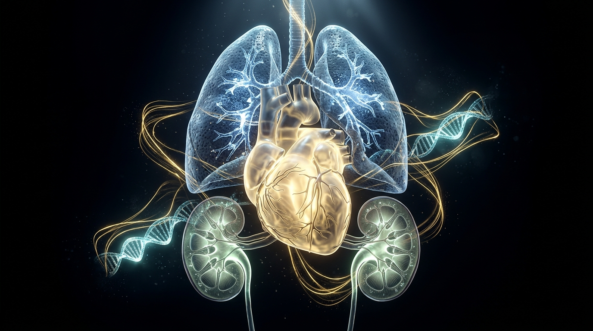
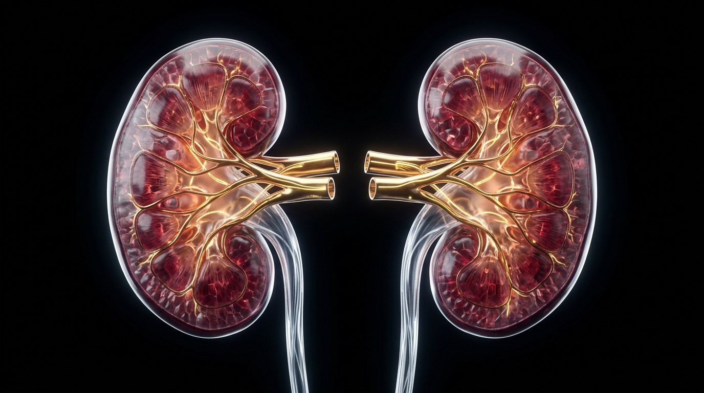
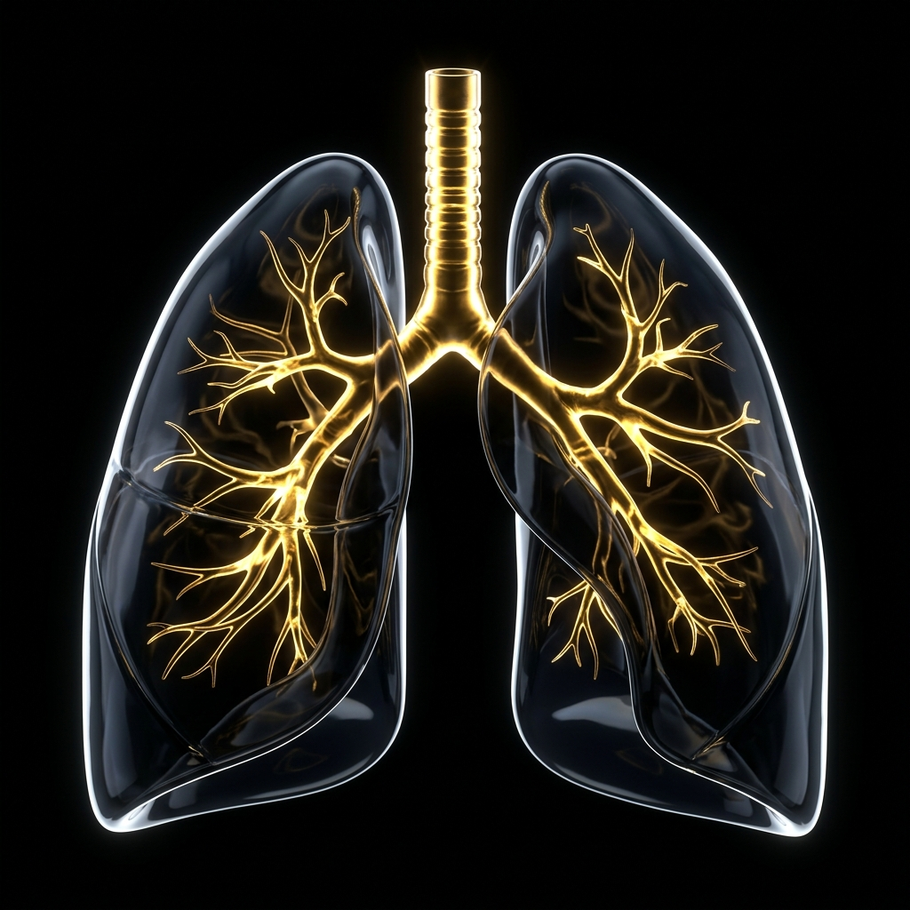
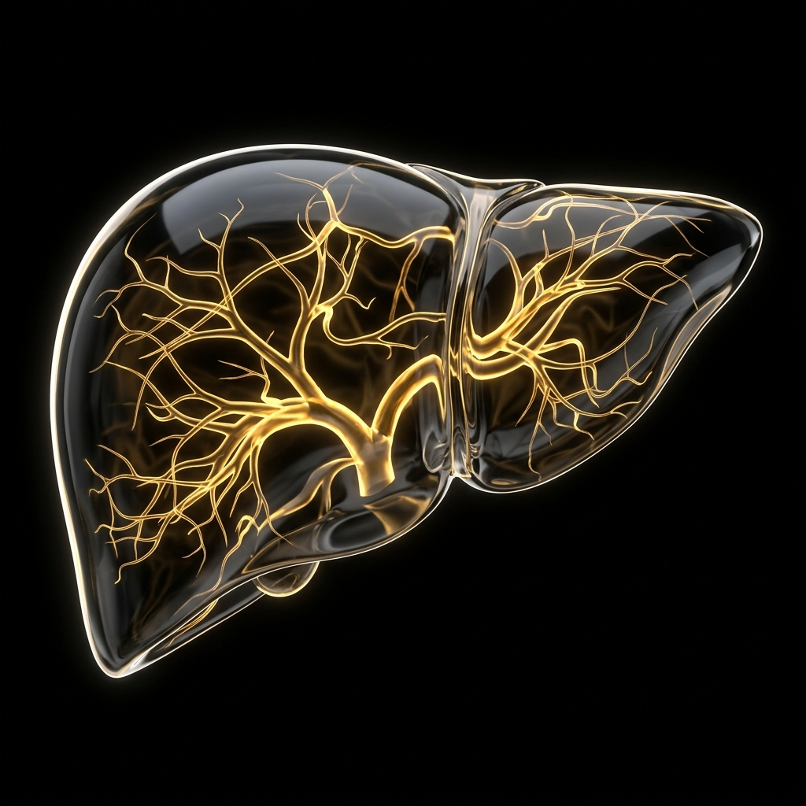
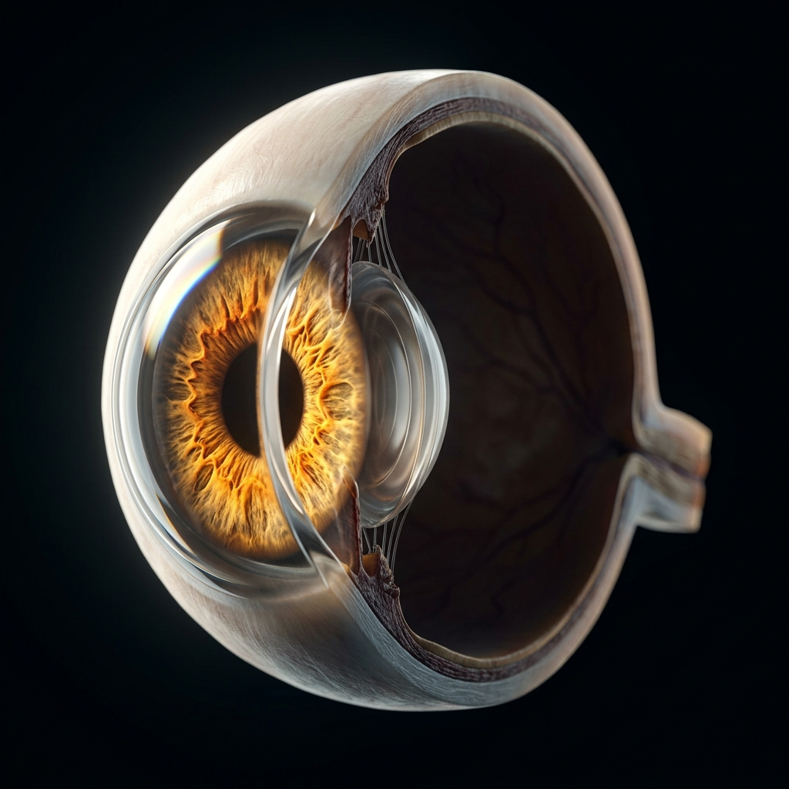

✦ Saves 1 Patient

Heart
Restores circulatory life to patients suffering from end-stage cardiomyopathy and heart failure.
Critical Window
4–6 Hours
A single organ donor can save up to eight lives and restore sight, mobility, and dignity to more than fifty tissue recipients. Register your decision today with SHARE OTSU under Republic Act No. 7170. Free, voluntary, and heroic.

Hover over each vital organ to inspect exact clinical telemetry and see how many individuals are saved by your voluntary pledge.

Restores circulatory life to patients suffering from end-stage cardiomyopathy and heart failure.

Frees two individuals permanently from exhausting dialysis cycles, restoring independence and health.

Gives breath back to patients battling severe pulmonary fibrosis, cystic fibrosis, and advanced COPD.

A single donor liver can be split to save both an adult and a pediatric patient facing acute liver failure.

Restores the precious gift of sight to individuals living in darkness due to corneal blindness or trauma.
Treats severe burn survivors, prevents limb amputations, and rebuilds skeletal structural integrity.
Complete your pledge below. Your official digital Organ Donor Card updates dynamically in real time and can be saved to your device.
Thank you for your noble decision. Your pledge is officially recorded with the SHARE OTSU Registry at Southern Philippines Medical Center.
How organ donation functions under Philippine law and Southern Philippines Medical Center protocols.
You register your wish through this official SPMC registry, defining the organs and tissues you are willing to give.
Communicate your decision with your loved ones. Under Philippine practice, family consent affirms and honors your final wish.
In the event of clinical brain death, the SHARE OTSU transplant surgical team recovers organs with utmost medical honor and reverence.